Kagerou Project
 De: La Frikipedia, la enciclopedia extremadamente seria.
De: La Frikipedia, la enciclopedia extremadamente seria.
| De la serie anime para todos:
|
| Kagerou Project
|
|
|
| Género:
|
Emo, Vocaloid, Sharingan, Byakugan, Ojos del Shinigami
|
| Episodios:
|
Se sigue transmitiendo
|
| Autor del manga:
|
Un tal Jin y muchos oculistas
|
| Publicación:
|
Sigue gracias a la influencia de Sasuke Uchiha, colega emo con problemas de visión
|
| Publicado en:
|
Tiendas de ópticas y Youtube
|
| Director del anime:
|
Toph Bei-Fong
|
| Transmitido en:
|
Ni siquiera en los mundos alternativos...
|
| Ovas:
|
Nop
|
| Películas:
|
Nones
|
| Notas
|
Chupate esa, Sharingan!
|
«Que Sharingan ni que mierda, es obvio que aqui todos se drogaron y terminaron con los ojos rojos»
~ Sasuke Uchiha sobre el Mekakushi Dan
«Me suena a Kagerou, la mujer lobo que aparece en Touhou»
~ Cualquier friki sobre Kagerou Project
«Copiones! Apuesto a que si hubiéramos añadido música electrónica a nuestra serie, hubieramos tenido mas exito»
~ Rika Furude sobre esta serie que casualmente tambien tiene lineas de tiempo, repetir el mismo estúpido verano, lolis moes y un prota estupido que no sabe nada
«¡¡¡Oh mierda!!! ¡Tengo que ir al oculista!»
~ Dave Strider después de leer el artículo
Kagerou Project es una serie de canciones hechas por un tal Jin que cuenta las historias cortavenas de un grupo de adolescentes hormonales que por exceso de alcohol y cannabis, se les puso los ojos como la bandoera de Japón. Y tambien tienen que repetir una linea de tiempo porrocientas veces.
Argumento
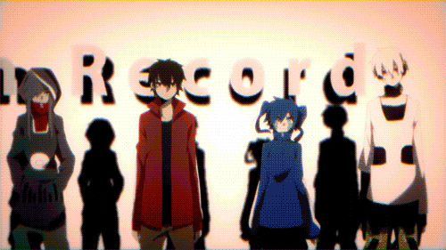 El grupo de oculares en cuestion
La historia (trama, anécdota, videos o como pollas quieras llamar esto) va sobre Shintaro, un hikikomori mas emo que Sasuke que ha estado en su cuarto encerrado por 2 años, ya que se traumó porque su aminovia Ayano se lanzó del 5° piso. Solo no se ha vuelto loco aun de tanto encierro porque tiene a una Vocaloid pirateada que gusta formatear su porno llamada Ene. Como de tanto formatear, se le cagó la maquina, Shintaro y Ene salen a la calle, donde se encuentran con un grupo de desadaptados que tienen enfermedades oculares desde los Ojos del Shinigami hasta el Bukkakegan.
Entre estos están tres vagos de la calle (una machona, un trollface y un zoofilico), la hermana idol caliente de Shintaro, un niñato odioso que solo piensa en retroceder lineas de tiempo en salvar a su hembra (quien lo friendzoneó), un autista albino que solo duerme y aspira, y una medusa moe kawaii y todos los adjetivos otakus que se te ocurran. Y todos están influenciados por la aminovia muerta del prota, porque es casi el equivalente a la Jebus de la historia.
Y nada, pos, se dedican a enfocar puras mamadas como el pasado de cada personaje, traumas, suffering, videos con canciones de Vocaloid y como carajos obtuvieron su *Inserte nombre aqui*-egan. Y resulta que en verdad todos están muertos hace rato y es una complicada trama de lineas de tiempo, medusas cogelonas y mas enfermedades oculares que en Naruto.
Ahora ve, a ver si eres de aguantar tanta mamada y ver los videos fumados. Ojo, están cargados de spoilers.

|
CUIDADÍNEste artículo o sección contiene alerones feos. O sea
SPOILERS.
|
Canciones
Videos en Nico Nico Douga que cuentan el plot de la historia. La mayoria son flashbacks, lineas de tiempo fallidas y PVs de todos los personajes, menos del pobre Seto.
- Children Record: Presentando a los raritos del equipo Sharingan.
- Jinzou Enemy: Shintaro descarga a una Vocaloid pirata. El pensaba descargar a Hatsune Miku, pero en su lugar obtuvo a una loli con dos coletas sin piernas
y con una concha pixeleada llamada Ene. Luego de trollearlo un buen rato y borrar su porno, la Miku pirata trata de convencerlo de que salga a la calle, pero este se niega, pues es un hikikomori mantenido. Luego muestran una empanada mental con dos lineas de tiempo. En una de ellas Shintaro la manda al carajo y la desenchufa, mientras que en el otro por fin sale a la calle para que cierre el hocico.
- Mekakushi Code: La machurra Kido presenta a los miembros del grupo de fumados en cuestión, tratando de parecer una jefaza grosa.
- Kagerou Days: Dos niñatos, Hibiya y Hiyori tienen una de esas típicas vacaciones de verano típicas de los anime. Hiyori se porta como una slut amargada diciendo que el verano es una mierda mientras persigue un neko. En eso, la atropellan dejando un lindo charco de sangre. Al otro dia, cual Meduca Meguca, Hibiya despierta en su cuarto y se ha repetido el dia anterior. Trata de salvarla, pero ahora no la atropellan, sino que muere empalada. El pobre mocoso se pasa porrocientas lineas de tiempo tratando se salvar a su chica, pero esta se muere en todas. Para acabar con el suffering, decide dejar que lo atropellen para salvar a Hiyori, pero no contaba conque al otro dia la muy puta retrocedería el tiempo para salvarlo y aquí vamos de nuevo.
- Headphone Actor: Takane, una amargada tsundere, recibe un mensaje subliminal de sus audífonos, en los que estos le dicen que corra a lo Forrest Gump porque se acaba el mundo y ya pasó 2012. La tsundere corre hasta llega a un cerro en el que ve como unos científicos lanzan una bomba mas fea que la de Hiroshima a la ciudad, quedando unos bonitos escombros.
- Souzou/Kuuzou Forest: Mary es una medusa moe que vive en el pantano de Shrek sola porque los nipones son unos racistas asquerosos. Ha estado viviendo ahí por años desde que murió su vieja, pero aun conserva su apariencia loli. Sin nada que hacer excepto dar amor a los animales y fumar hierba, es encontrada por Seto, quien le dice que la vida es bella y la lleva a vivir a su casa, porque es de lo mas normal sacar a lolis monstruo de sus casas.
- Toumei Answer: De nuevo el amargado Shintaro, solo que esta vez cuentan su vida en la secu. No tenia amigos pues era el cerebrito del salón y un pendejo insufrible. La unica que le aguantaba sus pokerfaces era su aminovia Ayano, por mas mal que este la trate. Cabe mencionar que Ayano sacaba puras malas notas y hacia con los exámenes grullas de papel (venga, estos nipones y su obsesión con esos pinches pajarracos empapelados). Un dia Shintaro ve a Ayano llorando, pero la manda al carajo. Al otro dia, se supo que Ayano se lanzó del 5° piso y quedó hecha puré, causando que Shintaro caiga en estado emo y se encierre en su cuarto por siempre....hasta que lo saca la Miku pirata.
- Ene no Denno Kikou: Cuentan como Ene paso de ser tsundere a Vocaloid pirata.
- Konoha no Sekai Jijou: El autista de Konoha ve a Hibiya y a Hiyori jugando Destino Final y quiere que dejen de hacerlo, pero no puede porque es autista.
- Kisaragi Attention: Momo, la hermana de Shintaro es una idol conocida especialmente por su pechuga, razón por la cual apenas sale a la calle, todos la quieren perseguir y violar. Tras renunciar a su trabajo, se encuentra con los tres vagos de la calle y la medusa moe, pues la quieren invitar a su grupo de oculares.
- Dead and Seek: Tras la muerte de la santa paloma de Ayano y su mamá, Kenjirou experimenta con la tsundere y el autista para buscar una forma de revivirlas pero se vuelve un cientifico loco.
- Shinigami Record
- Gunjou Rain
- Yobanashi Deceive: El vídeo trata básicamente de Kano sintiéndose el papi del barrio y caminando por las calles por allí mientras cuenta como se ha convertido en un gilipollas mentiroso capaz de superar a la pendeja bruja de Marisa Kirisame. También se le ve haciendo actos de travestismo vistiéndose de la machorra de Kido y el gay de Seto.
- Shounen Brave: Seto cuenta su vida como el saco de boxeo personal del barrio hasta que encuentra un animalejo callejero que se hace su amigo hasta que se muere y luego descubre que tiene poderes para leer la mente, haciendo que entre en estado emo hasta que conoce a la medusa loli. Cualquier parecido con Kotoura-san es coincidencia.
- Yuukei Yesterday: Takane (antes de ser transformada en una Vocaloid pirata) cuenta sus desventuras con el palurdo de Haruka y cuenta acerca de lo mucho que se lo quiere tirar, con miedo a que si llega a hacerlo lo mate de un infarto.
- Otsukimi Recital: Momo decide quitarle el estado emo a Hibiya, quien sigue emo por lo de Kagerou Days. Para eso tienen una cita y se van de parranda por ahi, pero ella la para cagando con sus múltiples torpezas.
- Ayano no Koufuku Riron: Hace años cuando Ayano era una loli, los padres de esta adoptaron a los tres vagos de la calle. El trio andaba en estado emo depresivo por sus sufferings, traumas y problemas oculares, hasta que Ayano los convence de que hagan un club. Como la virgen santisima y purisima que siempre ha sido, se le ve ayudando a los demás personajes porque si, en especial al pinche emo de Shintaro. En eso, muere su vieja, los tres vagos regresan a la calle y se entera de que su viejo ha hecho experimentos con Takane y Haruka. De modo que se lanza del quinto piso para morirse y conseguir poderes, pero olvido que para entrar al Daze se muere en pares, de modo que se muere por idiota.
- Lost Time Memory: De la nada sueltan un spoiler y se revela que hay dos líneas de tiempo alternas según el suicidio de Ayano. En una de ellas Shitaro sigue emo porque su aminovia se murió, desenchufó a Ene y se hizo emo cortavenas y se suicida, ocasionando el BAD END. En la otra, Shintaro ya superó la muerte de Ayano y se va con el grupo de los oculares, salva a un Konoha emo de suicidarse pero la bala le cae a el. Tras eso sigue una escena fumada donde se encuentra con Ayano, quien le entrega su Sharingan.
- Outer Science: BAD END en que Konoha fuma muchas escamas de medusas y queda convertido en un esperpento del lado oscuro a lo Darth Vader llamado Kuroha. Lo primero que hace es cargarse a todo el casting de las formas mas sádicas posibles, dejando solo a la pobre Mary en pleno despair.
- Marry no Kaku Sekai: Tras el BAD END, la medusa moeblob retrocede el tiempo cual Homura Akemi.
- Summer Time Record: Nada, solo se muestra a Haruka dibujando los escenarios y personajes de la serie por 5 minutos, porque Jin era muy vago para hacerlo el solo y el autista de Haruka aceptaba unos pocos centavos como paga. Sin embargo, la cancion es el GOOD END de la historia, ya que Shintaro consiguió los ojos de Ayano y salvó a todos, pero nadie recuerda lo que pasó y cada uno se va por su lado.
Personajes
Mekakushi Dan
| Personaje
|
Descripción
|
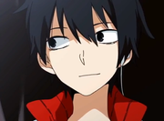 Shintaro Kisaragi |
«Si no puedo usar mi computadora voy a morir! VOY A MORIR!»
~ Shintaro sobre su frikismo
«Amo la soda»
~ Shintaro demostrando su amor.
El prota de la serie. Es un hikikomori sabelotodo, más cobarde que Yukii (y creias que eso ya era imposble?) que siempre daba el coñazo de cualquier cosa, hasta que quedó traumatizado porque su aminovia Ayano decidió jugar a la gravedad y se lanzó de un quinto piso. Es la clase de persona que te deprime solo con verlo, no tiene prácticamente ningún interés en particular, no destaca en nada, y como todo lo demás es cierto hasta desaprovecho una buena hembra que estaba disponible (véase Ayano) y tiene un poder relacionado con a mirada, al igual que los demás drogadictos,que al parecer (cómo se vió en la serie) su poner consiste en recordar cada una de las putadas de su vida. Cabe mencionar su mayor amor es la soda, volviéndose el mayor canon de la serie.
|
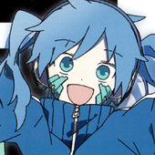 Ene |
«En vez de hablar de las cosas que te gustan, hablemos de las cosas que odias, Maestro!»
~ Ene hinchandole las pelotas a Shintaro
«Maestro, maestro, MAESTROOO!»
~ Ene hinchandole las pelotas (de nuevo) a Shintaro
Plagio de Hatsune Miku tras una sobredosis de LSD. Es un virus dentro de la computadora de Shintaro y gusta hincharle las pelotas mandando spam, mandando el porno a la Papelera de Reciclaje, borrar sus partidas en el WoW y descargar bazofias como el Rellenuto y meterse en los usb. Le excita llamar a Shintarou "Maestro" por una apuesta que mencionaré mas adelante. Su poder es abrir la mirada, lo que la hace inmortal.
Secretamente lo que nadie sabe es que en verdad es Takane, una tsundere enfermiza, gamer y gruñona que quería cogerse a su amigo Haruka, pero no se atrevía por tsundere. Luego de que sus audifonos le dieran mensajes subliminales, es violada, experimentada y secuestrada hasta que se convierte en su avatar en un videojuego. Ah si, en cuanto a lo de porque Ene llama a Shintaro "Maestro" es porque una vez este venció en videojuegos a la gamer de Takane y la apuesta era que si ella perdía, sería su esclava sepsual y lo llamaría "Maestro", pero tras ganarle, le dio asco la idea de tirarse a una tsundere plana (ademas tenia a la regalada de Ayano) y la mandó al carajo.
|
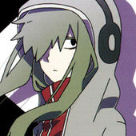 Tsubomi Kido |
«KANO MALDITO IDIOTA HIJO DE TU PUTÍSIMA MADRE»
~ Kido cada 5 minutos.
«N-NO SOY TSUNDERE PERO TE ODIOOO MALDITO IDIOTA»
~ Kido demostrando que no es tsundere. (mentira)
Antes que nada, déjenme aclarar que este capricho de la naturaleza es una tia. Ahora que te lo dije puedes seguir leyendo. Kido es conocida por usar una capucha en forma de I-Pod, ser extremadamente machota y tener una actitud de pocos amigos hacia los chicos sobre todo a Kano, a quien gusta agarrárselo a golpes.
Su mayor amor es Kano, por mas que lo niegue la muy tsundere, pero éste cada vez que trata de demostrarle su amor algo ocurre que termina diciendo idioteces como reírse de las cojudeces que hace, decir que que parece hombre o que es muy masculina, o cosas que en un caso cualquiera le habría llegado una buena patá en los cojones. Se sabe de que antes era una niña pija, pero era mas bastarda que Jon Nieve, de modo que la trataban peor que mierda. Su poder es ocultar la mirada o sea volverse invisible, a menos de que le toquen el culo y vuelve a ser visible otra vez.
|
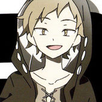 Shuuya Kano |
«Kukukukukukuku»
~ Kano plagiando la risa de Ryuk y burlándose de cualquier webada.
Compañero amigo intimo de Kido. Muy hablador (para callarlo, hay que meterle el puño, si entienden a lo que me refiero), mentiroso compulsivo y con una apariencia de trollface plagiada de Izaya Orihara. Le encanta abusar de Kido y manosearla, es hiperactivo, le encanta fumar marihuana y por eso esta tan loco el pobre chamaco. Irrita tanto a sus compañeros que estos le dan el coñazo.
Le excita ser golpeado por Kido y por cualquier hembra de la serie en general, ya que cuando era peque tenía complejo de Edipo con su mami, una vieja menopausica mas loca que la de Norman Bates quien lo agarraba a golpes de cualquier cosa. Su poder es engañar la mirada y crear ilusiones, o sea se te aparece por atras para tocarte el culo, pero sorpresa, en verdad es una ilusión y en verdad te esta obligando a que le practiques sexo oral. Para aumentar sus pendejadas, parece que es el traidor del grupo y le da información a Azami, ya que quiere cagarle la vida a Shintaro porque cree que el provoco el suicidio de Ayano (sin saber que ella se suicido para conseguir un Sharingan y salvar a Kano y al otro par de ineptos, que ironia).
|
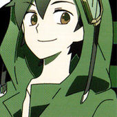 Kousuke Seto |
«¡¡Aah, mira ahí hay un venado !!»
~ Seto demostrando su zoofilia en su comercial promocional.
El tipico Síndrome de Kotoura-san.
|
Marry Kozakura |
«Perdón! Perdón! PERDOOON!»
~ Marry disculpandose por cada cojudez que hace.
«¡No soy una bola esponjosa!»
~ Marry diciendo mentiras
La típica chica tierna y dulce e inocente que cualquier friki perverso desearía, aunque al final resulta que es una puta loca celosa posesiva(véase Seto) y encima es una Mary Sue medusa. Se tropieza de cualquier cosa, llora por todo, siempre termina haciendo berrinches y tiene serios problemas para comunicarse con los demás (si ve a una persona nueva, de inmediato se esconde bajo las piernas de Seto). Le teme a las alturas,la oscuridad,a la sangre y hasta al agua, pero da igual, pues las serpientes no se bañan.
Antes vivía con su madre (si, mas medusas) en un bosque en medio de la nada, pero esta se murió y se quedó a podrirse dentro de la casa hasta que Seto la encontró, le dijo que la vida es bella y le dio de comer dulces de extraña procedencia. Su habilidad es contactar la mirada y te endurece la polla y te quedas duro como piedra por un minuto.
|
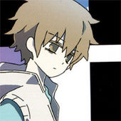 Hibiya Amamiya |
«Odio las tetas.»
~ Hibiya dejandole en claro las cosas a Momo.
«¡¡¡¡Lo siento, lo siento lo siento, lo siento!!!!»
~ Hibiya despues de que su padre lo echara a los perros al no querer darle permiso para ir a ver a la puta de Hiyori
Criajo sabelotodo y agrandado, pero que con su amada Hiyori es un pringao. Un dia de vacaciones de verano típico en las series shonen, el estaba dispuesto a confesarsele a su hembra, pero a esta se le caían las bragas por Konoha. Para rematar, la atropellaron. Luego de un ataque emo, Hibiya y Hiyori terminan metidos en las lineas de tiempo de Homura Akemi y este se pasa porrocientas lineas tiempo tratando se salvar a Hiyori, quien moria de formas tan gore dignas de Final Destination. La cosa es que al final la cosa se fue al carajo y Hiyori se murió. Aun después de muerta, se pajea pensando en Hiyori (quien a decir verdad era la típica perra pija abusadora) e ignora las insinuaciones de Momo, ya que sus tetas le dan asco porque le recuerdan a las vacas y prefiere las planas. Su poder es concentrar la mirada y ver como un telescopio....venga, esto si es patético.
|
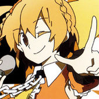 Momo Kisaragi |
«¡Pero que cobarde!»
~ Momo Sobre lo orgullosa que está de su hermano mayor
«Me lo comi»
~ Momo sobre su brillante forma de estudiar
La hermana menor de Shintaro. En concordancia con el patrón moe, esta es la chica perfecta es modelo, torpe, buenorra, calentona, con buenas tetas y violable, la que todos quieren y nadie tiene. Pero a ella no le gusta y normalmente se esconde de sus fans con disfraces monses que cualquiera puede ver. Es media shotacon y a veces le tira la onda a Hibiya, pero este prefiere las planas y no pierde oportunidad para decirle que está gorda o prefiere las planas berrinchudas (véase Hiyori). Su poder es cautivar la mirada, o sea que quien la vea, de inmediato se la va a querer violar.
|
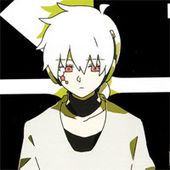 Konoha |
«zZzzzZZZZzzzZZ....»
~ Konoha opinando sobre la serie.
«Toilet»
~ Konoha demostrando que no puede ir al baño solo.
Albino autista que vive de colado en casa de Hiyori. Esta le tiene ganas, mientras que Hibiya lo quiere matar. Su poder es despertar la mirada, que le deja tener la apariencia que se le de la gana, pero efectos secundarios es que tiene memoria a corto plazo, cual Dory, volviéndolo un retrasado mental.
La cosa es que en verdad es Haruka, el interés humedo de Takane, tio autista y enfermizo que le daba infartos de lo que sea. Luego de ser violado, experimentado y secuestrado, se convirtió en su avatar en un videojuego. También es medio esquizofrenico y mata a todos los drogadictos en varias lineas de tiempo.
|
Otros idiotas
| Personaje
|
Descripción
|
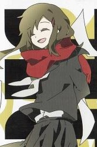 Ayano Tateyama |
«I CAN FLY!!!!»
~ Ayano antes de lanzarse del quinto piso.
La santa paloma de la historia y típico personaje que al morir todo se va a carajo. Era la aminovia de Shintaro, quien lo perseguía con frecuencia con la excusa de que quiere ser su amiga y quitarle la emositura. Naturalmente este la manda al carajo, pero la tenia tras suyo cual perro faldero. También tiene una vida secreta con los demás personajes, pues era la chula de los tres huérfanos vagos de la esquina (véase Kido, Kano y Seto) y le daba consejos a la amargada de Takane sobre como quitarle la virginidad a Haruka sin matarlo de un infarto en el intento.
Asi Ayano se la pasó feliz siendo la virgen santísima y purisima de la serie hasta que de pronto un dia su mamá se murió y descubrió que su viejo estaba obsesionado con un experimento que tenia que ver con medusas, ojos del shinigami y que Takane y Haruka murieron violados y experimentados. Esto la hace caer en estado emo, y decide lanzarse del quinto piso creyendo que asi conseguira poderes, pero la muy tarada olvido que para entrar al Daze y conseguir poderes se tiene que morir de dos. Y paso lo que todos sabemos, que Shintaro cayó en la emositura por eso. En el GOOD END, Shintaro salva a Konoha y se comunica con Ayano, quien le regala su Sharingan y muere definitivamente.
|
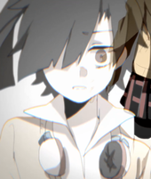 Takane Enomoto |
Es la típica tsundere amargada, plana y de dos coletas que tiene una fijación por los palurdos. Tiene una enfermedad que le hace desmayarse cada 5 minutos. Secretamente es una friki de los videojuegos y quiere tirarse al palurdo de Haruka y se puteaba mutuamente con Shintaro.
De la nada un día sus audífonos le dieron mensajes subliminales en los que el mundo iba a acabar y que corra tanto como pueda. Ni Lola corrieron tanto como Takane corrió ese día. Cuando por fin se alejó lo suficiente de la ciudad, esta explotó, ya que en verdad era un proyecto fallido de un grupo nazi. Los mismos nazis la secuestraron, violaron y experimentaron hasta que quedó convertida en un plagio de Miku Hatsune pasado de drogas llamada Ene, que gusta hincharle las pelotas a Shintaro. Ah si, y por fin se le declaró a Haruka (quien estaba en un frasco a unos metros de ella) en medio de violaciones y experimentos, pero a quien carajo le importa? En el GOOD END, se revela que Takane no estaba muerta, sino en coma y revive, por fin capaz de tirarse a su autista palurdo.
|
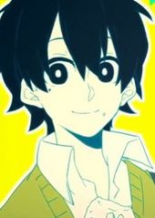 Haruka Kokonose |
Tio autista, enfermizo y encima otaku el cual está en el salón de los losers discapacitados junto a Takane, quien le tiene ganas, pero este no lo sabe porque es palurdo. Es tan imbécil que incluso una vez en el manga quedó en pelotas en frente de ella y no entendía porque de repente esta empezó a ovular con ferocidad. También dibuja mas o menos bien y diseña personajes para videojuegos en su tiempo libre.
Haruka es el típico niño chulo que es capullo retrasado mental pero atrae a la tipa con un humor de la hostia, y claro el guay chulo es siempre de los primeros en caer. En el mismo incidente de los audífonos y los nazis, a este le dio uno de sus múltiples infartos y el profe Tateyama se lo llevó (por que es de lo mas normal llevarse a los niños desmayados que se encuentra por la calle) para que lo experimenten y sodomizen hasta que quedó convertido en un tío mas autista aun llamado Konoha.
|
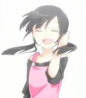 Hiyori Asahina |
«Que asco, o sea»
~ Hiyori sobre cualquier cosa
El interés humedo de Hibiya y amiga de la infancia de este, que sin embargo lo friendzonea. Era la típica chica popular, pija y con un humor de la hostia. Le gusta estar sola (razón por la cual también es virgen) e intimida a casi todos, excepto a Hibiya quien es inmune a esto, de modo que ella lo tiene de chupamedias. En una tipica mañana de verano comun en las series shonen, esta se enamoró a primera vista y empezó a ovular tras conocer al autista Konoha. Luego de soltarle a Hibiya un discurso emo de porque el verano es una reverenda mierda y perseguir a un neko, muere atropellada. Por alguna razón el tiempo se retrocede una y otra vez en las que Hibiya trata de salvar a Hiyori, pero esta se muere de formas peores que las de Destino Final. Cansada de morirse y de que su chupamedias estaba peor que un emo, por fin acaba con esa mierda de las lineas de tiempo y se muere definitivamente. Pero Hibiya sigue emo.
Es la hermana menor de la mamá de Ayano lo cual la convierte en la tía de esta, por mas raro que suene.
|
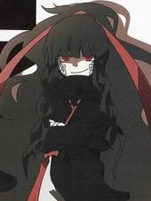 Azami |
Una medusa que era rechazada en su pueblo, de modo que se fue a Japón, ya que de ver tantos animes subnormales creyó de que la aceptarían sin mas. Obvio que todos saben que a pesar de los animes hentai de hoy en día, en verdad los japoneses tiene pollas pequeñas, son racistas y no son incestuosos o pedofilos. Rechazada otra vez, conoce a un albino llamado Tsukihiko, otro desadaptado, ya que los nipones ignorantes nunca habian visto un albino en sus putas vidas. Azami se queda prendada de el, pues su nivel de frikismo superaba al de ella. Asi se mudaron a una casa en medio del bosque mas horrible que te puedas encontrar, cogieron y tuvieron hijos, cual Shrek.
Sin embargo, la cosa no les duró mucho, pues un dia los nipones racistas casi matan a su albino waifu. Si bien el blanco sobrevivió, la medusa enloquece, crea un mundo alterno y manda al albino y a su hija al carajo. Ah si, por mas difícil que suene, es la abuela de la loli moe de Mary.
|
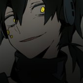 Kuroha |
«BIENVENIDOS A MI VIENTRE»
~ Kuroha dando clases de anatomía.
El tío malo de la serie, el más malo de los malos, discípulo de Autista de Konoha para poder matarlos a todos para que Mary se pusiera de emo y reiniciara la ruta. Es un psicópata enfermo, según dicen que se fumó demasiada marihuana y por eso se volvió tan demente. Por lo que se sabe ,él tiene los recuerdos de Haruka pero como es el puto villano prefiere matar a todos en vez de decir algo. Se violó salvajemente a Azami cuando estaban en el Daze, es un lolicon amante de plagios de Miku planas y tiene el síndrome de la abeja reina.
Ademas de que al pendejo lo vencieron con el poder de la amistad y solo salio 15 minutos en el anime.
|
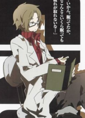 Kenjirou Tateyama |
«¿Como puedes ser tan estúpida?»
~ Kenjirou sobre Momo
Es el papá de la santa paloma de Ayano. Después de haber tenido un accidente junto a su esposa, entrar al Daze y que solo saliera él, su serpiente se apodero de él y empezó a experimentar con el autista y la tsundere para poder tener contacto con el Daze otra vez(cosa que no le sirvió de nada al muy puto) Es el profesor de la tetona Momo. Mata a Haruka y a Takane (mentira, solo quedaron en coma) para encontrar la forma de revivir a su esposa, porque su serpiente se lo dijo, aunque al final se sabe que la serpiente es el verdadero malo de la historia y estafó a Kenjirou.
|
¿Sabías que...
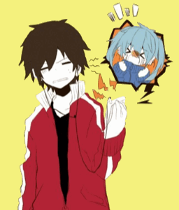 Shintaro: Carajo, Ene! Me tienes hasta las pelotas! - ...Los fans solo ubican la serie por el video de Kagerou Days, ese video en el que Hibiya y Hiyori juegan a Destino Final?
- ...Kido es mujer?
- ...Hibiya no es emo, solo muy pesimista?
- ...Que cuando mas de una persona entra al Daze al mismo tiempo, sólo puede salir una persona y que por eso, la hermana de la machorra, la mama del trollface, la mama de la loli-medusa, el papa de la tetona, la pija puta de Hiyori, la mama de Ayano, y podríamos seguir la lista hasta el fin del mundo, no salieron del Daze y quedaron atrapados ahí?
- ...Takane debe ser bien masoquista, pues en medio de violaciones y experimentos en vez de gritar por ayuda, le confiesa su amor al palurdo Haruka?
- ...Estrenarán anime de Kagerou Project en el 2014?
- ...El pueblo que explotaron en Headphone Actor era la aldea de South Park?
- ...Mataron a Kenny otra vez hijos de puta!
- ...Segun Jin aun no le hacen su puto PV al pobre Seto porque contiene spoilers?
- ...Kano parece la versión oxigenada de Izaya de Durarara!!?
- ...Konoha no es Kon Hoja?
- ...Ene peleó contra Hatsune Miku y perdió?
- ...La Marleytuga pudo haber salvado a Ayano?
- ...Que poder de los ojos ni que mierda, todos solo se fijan en Momo por sus tetas?
- ...Seto si llego a cogerse a Mary? (pero Jin lo censuró)
- ...Hay dos lineas de tiempo alternas y en una Shintaro es emo cortavenas?
- ...Johnny Bravo enseñó a Kano a conquistar a las mujeres?
- ...Mary es Fujoshi y su anime favorito es Kuroshitsuji?
- ...Azami es prima de Rider de Fate/Stay Night?
- ...En mas recientes capítulos se incluye a un Konoha negro y asesino, al cual los fans llaman Kuroha?
- ...Shintaro no sabe nada, igual que Jon Nieve?
- ...El cabello de Mary se vuelve tentaculeador cuando quiere?
- ...Esto no es broma?
- ...El club de óptica no se llama Mekameka Dan, por mas que la mensa de Momo insista?
- ...Entendemos que lo de Haruka no tenga cura, pero por que carajos Takane no se hace una cura contra la narcolepsia crónica que padece?
- ...Te conviene vigilar tus ojos, ya que están en peligro?
- ...Hiyori fue extra en Destino Final por sus múltiples muertes?
- ...El enemigo final será el Arroz Tres Delicias?
- ...Kagerou Project tiene un argumento de aquí te espero (pero no aburre), tan largo que acabara cuando tengamos 100 años, los cerdos vuelen, las tortugas corran y los mapaches nos digan su verdadera identidad, y lo jodido es que seguiremos enganchados?
- ...Los fans de esta serie son emos?
- ...Esto tendrá un anime que comenzará el 12 de Abril?
- ...Sasuke Uchiha va a ser el próximo miembro del Mekakushi-dan?
Sabes que has visto mucho Kagerou Project cuando...
- ...Intentas juntar una rana con un ciervo?
- ...Cuando intentas empujar a la aminovia del autista del curso por la ventana?
- ...Te pones una capucha fea y contactos rojos y te alucinas miembro del Mekakushi Dan?
- ...Vas por callejones oscuros, pantanos y bosques esperando encontrar una loli monstruo que te complazca en todo?
- ...De repente ser idol o estrella pop te parece horrible?
- ...Tu risa es kukuku?
- ...Te pones a cantar a todo volumen los vídeos en japonés y tus padres piensan que cambiaste de religión?
- ...Por alguna razón desconocida, el chico loser y enfermizo del salón te parece atractivo?
- ...Crees que si mueres entraras al Daze y luego resucitaras con enfermedades ópticas?
- ...Te dicen Hibiya por que eres gruñón y pendejo con todo el mundo pero con tu interés amoroso eres un pringao
- ...A cualquier chica que veas le lanzas insinuaciones sepsuales hasta que estas te parten la cara de un puñetazo?
- ...Te paseas por el orfanato esperando encontrar a tres niñatos lo suficiente patéticos, pues creen que tienen Sharingan?
- ...A tu padre lo acusas de estar envuelto en un proyecto sobre medusas y que mató al autista y a la gamer del salón?
- ...Al payaso del salón lo llamas Kano y tratas de emparejarlo con la chica machurra del salón?
- ...Lo piensas dos veces antes de cruzar la calle por miedo a que un camión te arrolle junto con tu amigovio/a y entres en el Daze?
Autor(es):
- Fordus
- SakuraMiya
- Likan003
- MartiiZoel
- Chimyku99
- KanokoShuuya
- Gato choc999
- Anlli
- Katnive
- Shintaro-kun
Frikipedia 2005-2016, Licencia
GFDL 1.2 - Extraído por FrikiLeaks